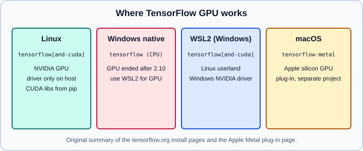

Installation: pip, GPU, WSL2 & macOS
|
This content was generated with the assistance of AI and should be verified against the official documentation before being relied on in production. |
Installing TensorFlow is mostly a matter of choosing the right package for your operating system and accelerator, and keeping it in an isolated environment. This page covers the pip route, GPU setup on Linux and WSL2, Docker images, the situation on native Windows and macOS, nightly builds, Python version support and the tf_keras compatibility package. After installing, continue with Devices: CPUs, GPUs and TPUs to check that the GPU is visible; for the project’s status see Ecosystem and Project Status.
It targets Python 3.13 and TensorFlow 2.21 with Keras 3.15 (TensorFlow 2.22 is labelled "upcoming"), and was checked against the official documentation on 2026-10-30. The pip, Python and tf_keras commands and the verification script were run on Python 3.13 with TensorFlow 2.21 and Keras 3.15 (CPU, macOS arm64) on 2026-10-31; the GPU, WSL2, Docker and nightly commands need that hardware or software and were not executed. The official pip page contains some figures (the CUDA and cuDNN versions, and the macOS and Python ranges) that are not consistent with each other or with the 2.21 announcement, so each such value below is flagged; always confirm against the page for the exact release you install. General Python environment practice is in Virtual environments and packaging; the PyTorch equivalent of this page is PyTorch installation.

Choose a package
| Package | Contents | When to use |
|---|---|---|
|
CPU build on every platform; GPU-capable on Linux |
the default |
|
|
Linux and WSL2 with an NVIDIA GPU |
|
smaller CPU-only build |
CI, servers without GPUs, containers |
|
nightly preview build |
testing unreleased changes only |
|
the Keras 2 API under a different package name (its version follows TensorFlow, 2.21.0 for TensorFlow 2.21) |
keeping legacy Keras 2 code running |
|
the TensorBoard UI and the implementation of |
logging and visualising training |
|
Apple Metal plug-in for macOS |
Apple silicon GPU acceleration |
The documentation states that only the PyPI package is officially released; do not install TensorFlow with conda (the community conda-forge builds are not maintained by the TensorFlow team). Also upgrade pip first: the official page asks for pip 19.0 or newer on Linux and Windows and 20.3 or newer on macOS.
Python version support
The official pip page lists a software requirement of Python 3.9 to 3.12 in one place, yet in another says that Python 3.9 is no longer supported as of TensorFlow 2.21, and its package table covers Python 3.10 to 3.13. The consistent reading is that TensorFlow 2.21 supports Python 3.10 through 3.13, which matches this site’s baseline of Python 3.13. Minor releases add new Python versions, as stated in the 2.21 announcement, so a brand-new interpreter release may not have wheels yet; check the "Download files" section of https://pypi.org/project/tensorflow/ before upgrading Python. If no wheel exists for your interpreter, pip fails with "no matching distribution"; use an older interpreter in a separate environment instead of building from source.
Virtual environment and CPU install
python3.13 -m venv .venv
source .venv/bin/activate # Windows PowerShell: .venv\Scripts\Activate.ps1
python -m pip install --upgrade pip
python -m pip install tensorflow # or tensorflow-cpu
python -c "import tensorflow as tf; print(tf.__version__); print(tf.reduce_sum(tf.random.normal([1000, 1000])))"Installing TensorFlow also installs Keras 3 as a dependency; check it with python -c "import keras; print(keras.__version__)". If you want exact reproducibility, pin both (tensorflow==2.21.* and keras==3.15.*) in a requirements or lock file, and see Ecosystem and Project Status for why a mismatch between tensorflow and keras matters.
TensorBoard is not a dependency of TensorFlow 2.21, so pip install tensorflow does not install it. Install it separately when you want the TensorBoard UI or tf.summary logging:
python -m pip install tensorboardWithout it, tf.summary.create_file_writer still creates an event file, but tf.summary.scalar, histogram, image and text raise TBNotInstalledError: TensorBoard is not installed, missing implementation for tf.summary.scalar (with the matching function name). A keras.callbacks.TensorBoard callback can be created, but fit() raises the same error the first time the callback writes a metric. See TensorBoard.
NVIDIA GPU on Linux
python3 -m pip install 'tensorflow[and-cuda]'
python3 -c "import tensorflow as tf; print(tf.config.list_physical_devices('GPU'))"The and-cuda extra pulls the CUDA and cuDNN runtime libraries from PyPI, so you only need a compatible NVIDIA driver on the host and not a system-wide CUDA toolkit. The pip page lists a minimum driver of 525.60.13 on Linux and 528.33 for WSL on Windows, a CUDA toolkit version of 12.3 and cuDNN 8.9.7, together with the supported compute capabilities. These CUDA and cuDNN numbers look older than what the 2.21 wheels bundle; treat them as the page’s stated floor and rely on the versions pip actually resolves (inspect them with pip list | grep -i nvidia). An empty list from list_physical_devices('GPU') means TensorFlow fell back to the CPU; the usual causes are an outdated driver, a CPU-only wheel (tensorflow-cpu), a Python or glibc incompatibility, or missing permissions in a container.
Optional: TensorRT is documented as an extra for faster inference, not needed for training.
Docker
Images are published as tensorflow/tensorflow with tags latest (stable, CPU), nightly, a version number such as 2.8.3 (the docs' own example), and the suffixes -gpu and -jupyter; variants combine, for example latest-gpu-jupyter. GPU use requires only the NVIDIA driver and the NVIDIA Container Toolkit on a Linux host.
# CPU smoke test
docker run -it --rm tensorflow/tensorflow \
python -c "import tensorflow as tf; print(tf.reduce_sum(tf.random.normal([1000, 1000])))"
# Confirm the host exposes the GPU to containers, then run the GPU image
docker run --rm --gpus all ubuntu nvidia-smi
docker run --gpus all -it --rm tensorflow/tensorflow:latest-gpu \
python -c "import tensorflow as tf; print(tf.config.list_physical_devices('GPU'))"
# Run a local script with the current directory mounted
docker run -it --rm -v "$PWD":/tmp -w /tmp tensorflow/tensorflow python ./train.py
# Jupyter on port 8888
docker run -it -p 8888:8888 tensorflow/tensorflow:nightly-jupyterVersion tags for the current release exist on Docker Hub (2.21.0, 2.21.0-gpu and 2.21.0-jupyter were listed on 2026-10-31); pin one of them instead of latest for reproducible images. The official page documents the tag scheme with older examples.
Windows: native versus WSL2
TensorFlow 2.10 was the last release with GPU support on native Windows. From 2.11 on, native Windows installs of tensorflow or tensorflow-cpu run on the CPU only (a DirectML plug-in exists as a separate community-supported route). For a GPU on Windows use WSL2:
-
Windows 10 build 19044 (21H2) or newer, or Windows 11.
-
Install the NVIDIA driver for Windows (it includes WSL support) and do not install a Linux display driver inside the distribution.
-
Enable WSL2 and install a Linux distribution such as Ubuntu (
wsl --installfrom an administrator terminal). -
Inside WSL create a venv and run
pip install 'tensorflow[and-cuda]'as in the Linux section.
wsl --install -d Ubuntu
# then, inside the Ubuntu shell:
# python3 -m venv ~/tf && source ~/tf/bin/activate
# pip install --upgrade pip 'tensorflow[and-cuda]'
# python -c "import tensorflow as tf; print(tf.config.list_physical_devices('GPU'))"Native CPU installs on Windows additionally need the Microsoft Visual C++ Redistributable. Keep project files inside the WSL filesystem (not under /mnt/c) for acceptable I/O speed.
macOS and Apple silicon
The official pip page says the stock tensorflow wheel on macOS is a CPU build, and that TensorFlow 2.16 was the last release for Intel (x86) Macs. Apple publishes a separate Metal plug-in for GPU acceleration on Apple silicon (and AMD GPUs); it is maintained by Apple, not by the TensorFlow team.
python3 -m venv ~/venv-metal
source ~/venv-metal/bin/activate
python -m pip install -U pip
python -m pip install tensorflow # TensorFlow 2.13 or later
python -m pip install tensorflow-metal # the Metal plug-in
python -c "import tensorflow as tf; print(tf.config.list_physical_devices('GPU'))"Apple’s page states macOS 12.0 or newer, lists unsupported features (multi-GPU, Intel GPUs, TensorFlow 1 networks), and for TensorFlow 2.12 and earlier uses the older tensorflow-macos package. Its stated Python minimum is 3.9, which is not up to date with 2.21. More importantly, the latest tensorflow-metal release on PyPI (1.2.0) publishes wheels only for Python 3.9 to 3.12, so pip install tensorflow-metal finds no matching distribution on Python 3.13: GPU acceleration on Apple silicon needs a Python 3.12 environment (with a TensorFlow release the plug-in supports), and with Python 3.13 TensorFlow runs on the CPU. Check the plug-in’s PyPI page for newer releases before relying on it. For PyTorch on Apple silicon the equivalent is the MPS backend; see PyTorch devices.
Nightly builds
python -m pip install tf-nightly # unstable preview, CPU and GPU
python -c "import tensorflow as tf; print(tf.__version__)" # reports a dev versionDo not install tf-nightly and tensorflow in the same environment; they provide the same tensorflow module. Use a throw-away venv. The RELEASE.md on the master branch describes unreleased 2.22 and 2.23 content that nightlies may already contain.
Keras 3 and tf_keras
TensorFlow 2.16 and later ship Keras 3 as tf.keras. Code written for Keras 2 usually runs unchanged when it uses built-in layers, but not always. To keep legacy behaviour you can install tf_keras and import it explicitly, or install it and set TF_USE_LEGACY_KERAS=1 before TensorFlow is imported, which redirects tf.keras for the whole process. Details are in Migrating from Keras 2 to Keras 3; the multi-backend choice (KERAS_BACKEND) is explained in Keras multi-backend.
python -m pip install tf_keras
python -c "import tf_keras; print(tf_keras.__version__)" # 2.21.0
TF_USE_LEGACY_KERAS=1 python -c "import tensorflow as tf; print(tf.keras.__name__)" # tf_keras.api._v2.keras
python -c "import tensorflow as tf; print(tf.keras.__version__)" # 3.15.1Source: https://keras.io/keras_3/
Verify the installation
import platform
import tensorflow as tf
import keras
print("python ", platform.python_version())
print("tensorflow", tf.__version__, "| built with CUDA:", tf.test.is_built_with_cuda())
print("keras ", keras.__version__, "| backend:", keras.backend.backend())
print("GPUs ", tf.config.list_physical_devices("GPU"))
print("sysconfig ", {k: v for k, v in tf.sysconfig.get_build_info().items()
if k in ("cuda_version", "cudnn_version", "is_cuda_build")})On the macOS CPU wheel the script prints GPUs [] and sysconfig {'is_cuda_build': False}, because that build has no CUDA keys. On a Linux CUDA wheel tf.sysconfig.get_build_info() reports the CUDA and cuDNN versions the wheel was built against, which is the authoritative answer to "which CUDA does my TensorFlow want" (see the API reference for the keys available in your version).
Common mistakes
-
Installing TensorFlow with
condaor into the system Python instead of a venv. -
Expecting a GPU on native Windows with a recent TensorFlow; use WSL2 or Docker on a Linux host.
-
Installing a full CUDA toolkit by hand and mixing it with the pip-provided libraries; prefer
tensorflow[and-cuda]and keepLD_LIBRARY_PATHclean. -
Copying
pip install tensorflow-gpufrom old tutorials; that package name is a retired alias and must not be used. -
Installing
tensorflow-metalwith a mismatched TensorFlow release, which tends to fail at import time. -
Upgrading Python before checking that TensorFlow publishes wheels for it.